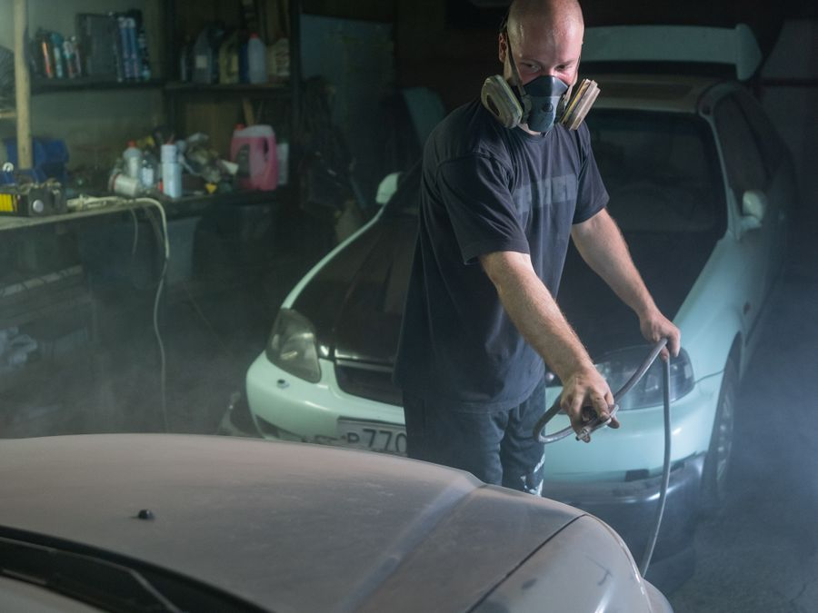
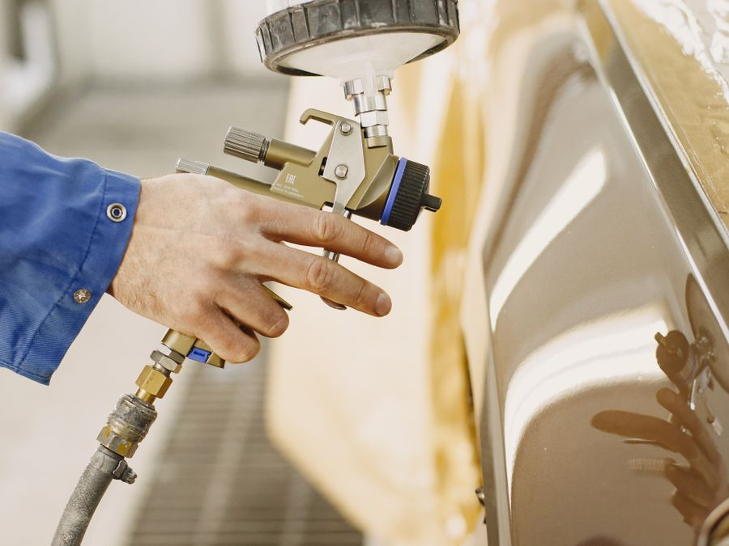
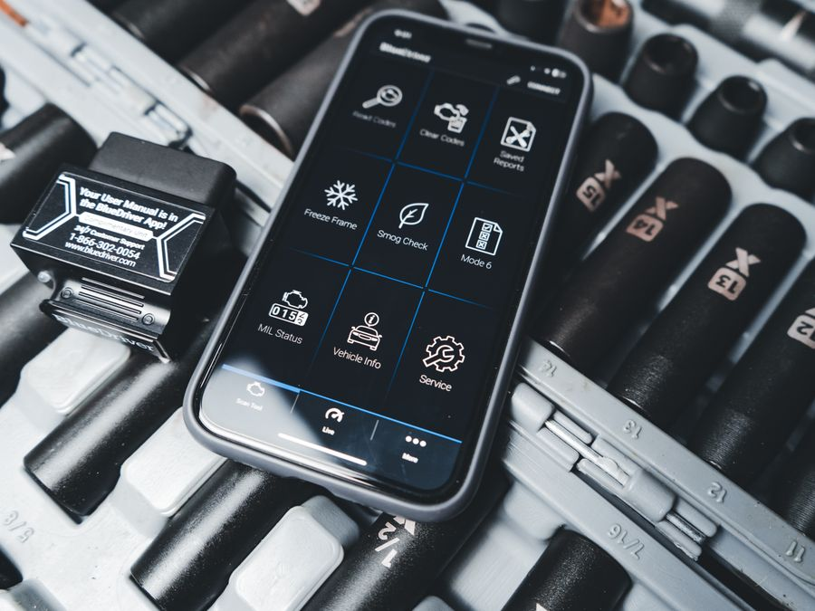
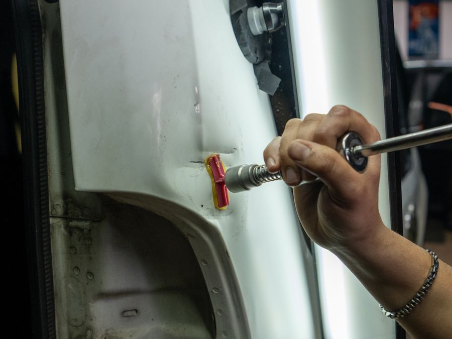
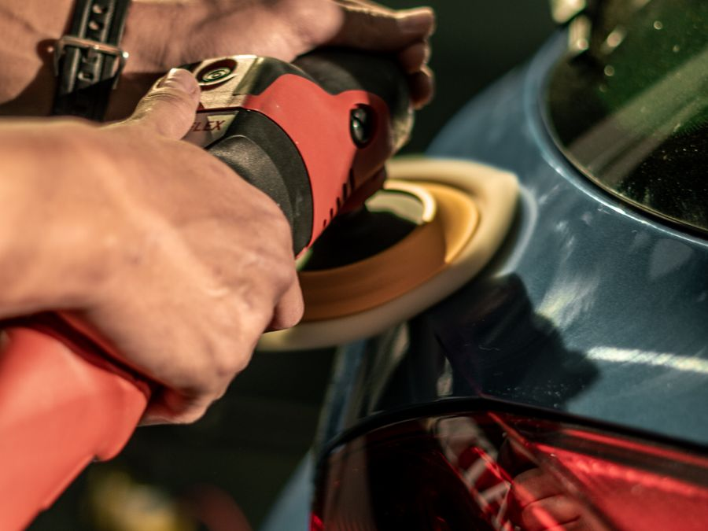
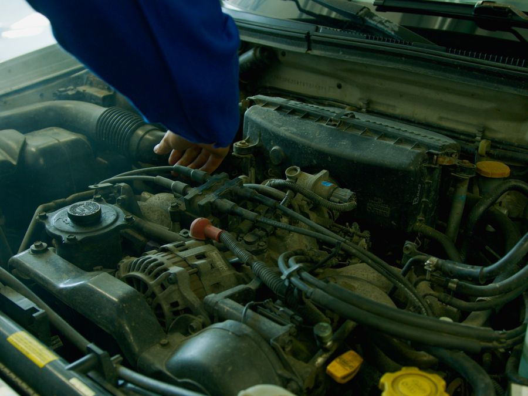

Maltepe Oto Servis: Kaporta, Boya ve Bakım Rehberi (2026)
Maltepe'de oto servis seçerken nelere dikkat etmeli? Kaporta-boya, bakım ve sigorta hasarında değer kaybını önlemenin yolları ve fiyat ipuçları.
Anadolu yakası ilçeleri için kaporta-boya, bakım, arıza tespiti ve hasar onarımı üzerine pratik bilgiler.

Bölge RehberiMaltepe'de oto servis seçerken nelere dikkat etmeli? Kaporta-boya, bakım ve sigorta hasarında değer kaybını önlemenin yolları ve fiyat ipuçları.

Bölge RehberiKartal'da çarpma, çizik ve dolu hasarı sonrası doğru kaporta-boya servisi nasıl seçilir, sigorta süreci nasıl kolaylaşır? Adım adım anlattık.

Bakım İpuçlarıKadıköy'ün yoğun şehir içi trafiği aracınızı normalden hızlı yıpratır. Periyodik bakım ve arıza tespitini neden ertelememelisiniz?

Boya İşçiliğiAtaşehir'in plazaları ve açık otoparkları, dolu sezonunda göçük hasarını artırır. Boyasız göçük düzeltme neden en doğru çözüm?

DetaylandırmaPendik sahili ve Sabiha Gökçen hattındaki araçlar daha çok güneş, tuz ve neme maruz kalır. Boyayı korumanın yolu düzenli pasta-cila bakımı.

MekanikÜmraniye'nin ticari araç yoğunluğu, mekanik bakımı kritik kılar. Motor, şanzıman ve fren işlemlerinde nelere dikkat etmeli?